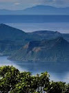

Taal Lake, formerly known as Bombón Lake, is a freshwater lake in the province of Batangas, on the island of Luzon in the Philippines. Area: 90.43 mi² Surface elevation: 16.4′ Location: Batangas Max. depth: 172 m (564 ft) Shore length1: 115 km (71 mi)
